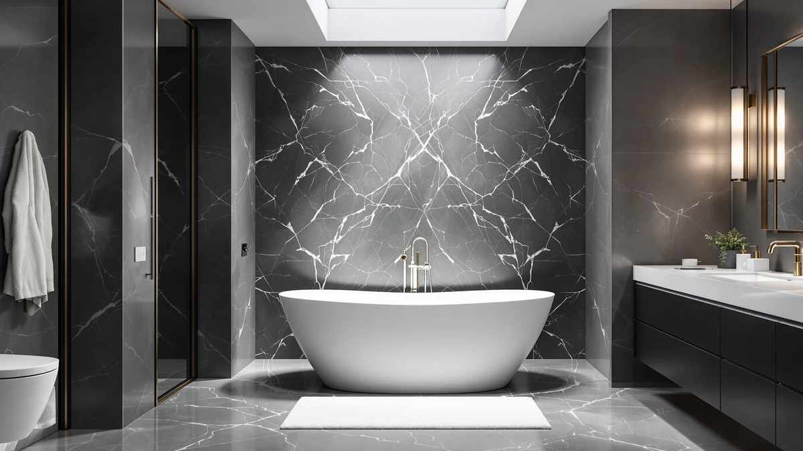

How to Choose Best Freestanding Tub: Complete Guide (2026)
Prices and picks verified as of August 2026. Independent, reader-supported reviews.


Things to Know Before You Buy
- A freestanding tub needs clearance on every side instead of sitting flush against one wall like a standard alcove tub, so measure the full footprint plus walking space.
- A water-filled tub for two adults can weigh 800 to 1,000 pounds, more than many bathroom floors are built to hold without reinforcement.
- Acrylic tubs are lighter and cheaper to install than cast iron or stone resin, but they hold heat for a shorter stretch of a soak.
- Freestanding tubs usually need a floor-mounted or wall-mounted filler instead of a standard wall spout, which adds to the plumbing budget.
Knowing how to choose best freestanding tub means working through five practical checks before you add anything to your cart: room dimensions, floor support, material, faucet placement, and installation cost. Skip one of these and you risk ordering a tub that looks great online but never makes it through your bathroom door, or one that needs a contractor to reinforce the subfloor before it can safely hold water.
This guide walks you through that process in order, the same order a plumber or bathroom designer would use when sizing up a renovation. You do not need special training to follow it. You need a tape measure, about two hours, and a shortlist of tubs you are already considering. By the end you will know which measurements matter, what your floor can safely hold, and which questions to ask a retailer or installer before you buy.
What You'll Need
- Supplies: painter's tape, a notepad or spreadsheet for tracking measurements, and spec sheets for the tubs on your shortlist
- Tools: a tape measure and a stud finder or floor joist locator
Step 1: Measure Your Bathroom and Doorway
Start with the space itself, not the tub. Measure the length and width of the area where you want the tub to sit, then add at least 4 inches on every side for cleaning access and towel space. Freestanding tubs sit away from the wall on at least one side, sometimes all four, so the footprint you need is larger than the tub's listed dimensions.
Next, measure your ceiling height if you are considering a deep soaking tub, since some models exceed 30 inches and can make a low bathroom feel cramped. Then walk the delivery path from your front door to the bathroom and measure every doorway, stairwell turn, and hallway along the way. A 60-inch acrylic tub can weigh 100 pounds empty but still needs 28 to 32 inches of clearance to turn a corner.
Write every measurement down before you start browsing. Knowing your numbers up front is what makes how to choose best freestanding tub a fast decision instead of a guessing game once you are staring at ten similar-looking listings.
Step 2: Check Your Floor's Weight Capacity
A freestanding tub concentrates its weight on a smaller footprint than a built-in alcove tub, which spreads the load across a wall and floor edge. That concentrated weight matters once the tub is full of water and you step in. A 60-inch acrylic tub might weigh 100 to 150 pounds empty, but add 40 to 50 gallons of water plus one or two bathers and you are looking at 700 to 1,000 pounds resting on a few square feet of floor.
Most homes built to modern code can handle this in a first-floor bathroom over a basement or crawl space with standard joists. Upper-floor bathrooms and older homes are the ones that need a closer look. Use a stud finder to locate the joists under your bathroom floor and note their direction and spacing, then compare that to the tub manufacturer's weight specification, usually listed as filled weight on the product spec sheet.
If your research turns up any doubt about the floor, get a second opinion from a contractor or structural engineer before you order. Reinforcing a floor after the tub arrives costs far more than checking beforehand, and it is one of the most common reasons freestanding tub installations get delayed.
Step 3: Pick a Tub Material and Shape
Material drives most of the price difference between freestanding tubs, and it also drives weight, which loops back to the floor check in step two. Acrylic is the most common choice for freestanding tubs because it is light, holds a molded shape well, and costs less to ship and install. Owners report it keeps bathwater warm for a reasonable stretch of a soak, though not as long as heavier materials.
Cast iron and enameled steel hold heat longer and feel more solid underfoot, but they can weigh three to four times what an acrylic tub weighs, which pushes many of them past what an upper-floor bathroom can safely support. Stone resin and solid surface tubs sit in between on weight but tend to cost more than acrylic for a comparable size.
Shape matters as much as material. Oval and slipper-style tubs fit long, narrow bathrooms, while a rectangular soaking tub uses corner space more efficiently in a square layout. Match the shape to the footprint you measured in step one rather than picking a shape first and hoping it fits.
Step 4: Decide on Faucet and Drain Placement
A freestanding tub rarely has a built-in deck for a faucet, so plan the water source separately. A floor-mounted filler stands next to the tub and connects to plumbing routed through the floor, giving you the cleanest look but usually costing more to install since a plumber has to run supply lines to a spot that previously had none. A wall-mounted filler is often cheaper if your existing plumbing already runs to a nearby wall.
Drain placement is the other detail people forget. Most freestanding tubs have a drain near one end, and that end needs to line up reasonably close to your existing drain line or the installation will need new plumbing work under the floor. Check the manufacturer's spec sheet for the drain location before you buy, not after.
If you are working with a plumber, bring your shortlist of tubs to that conversation instead of picking blind. A five-minute look at the spec sheets can tell them whether your existing rough-in will work or whether the project needs new lines.
Step 5: Confirm Plumbing and Installation Costs
The sticker price of the tub is usually the smallest line item once installation is factored in. Delivery alone can run $50 to $150 for a large tub depending on how far it has to travel from the curb, and that is before anyone touches plumbing. Ask any contractor or installer for a written estimate that breaks out labor, materials, and permit fees separately from the tub itself, since freestanding tub installations often need a licensed plumber even when the tub looks like a simple swap.
Factor in the filler and drain work from step four, plus any floor reinforcement identified in step two, before you commit to a final budget. A tub that costs $600 can easily add another $500 to $1,500 in installation depending on your home's existing plumbing and floor structure.
Once you have real numbers for space, floor support, material, plumbing, and total cost, you have everything you need to finish how to choose best freestanding tub with confidence instead of guesswork.
Common Mistakes to Avoid
The most common mistake is measuring the tub but not the delivery path. A tub that fits your bathroom footprint can still get stuck on a stairwell landing or a narrow hallway turn, and by the time that happens you have already paid for delivery, with restocking fees eating into any refund. Walk the full path from the street to the bathroom before you order, not after the tub is on the truck.
The second mistake is guessing at floor capacity instead of checking it. A filled freestanding tub can weigh close to 1,000 pounds, and buyers often assume their floor can handle it simply because the room looks sturdy. Older homes and upper-floor bathrooms are the cases where that assumption fails most often.
The third mistake is buying the tub before pricing the plumbing. A floor-mounted filler and a relocated drain can add more to the project than the tub itself costs, and skipping that estimate leads to budget surprises mid-renovation.
The fourth mistake is choosing a shape based on photos rather than your actual floor plan. An oval tub that looks striking in a showroom photo can waste awkward space in a narrow bathroom, while a rectangular tub might not fit the softer lines of an older layout. Match shape to the measurements from step one, not to what looked best online.
Our Top Picks
If you want to skip straight to specific models, these three freestanding tubs cover the most common priorities from the process above: an easy fit for standard footprints, an established manufacturer, and extra soak depth.

Editor's Pick
59 Inch Acrylic Freestanding Bathtub
A 59-inch acrylic tub with a shape and price that work for most standard bathroom footprints, a solid starting point once you have confirmed your floor and plumbing.
$629.99
Check Price on Amazon
Best Value
WOODBRIDGE 59" Acrylic Freestanding Bathtub
WOODBRIDGE is an established bathtub manufacturer, and this 59-inch acrylic model gives buyers a known name to check spec sheets and warranty terms against before ordering.
$671.41
Check Price on Amazon
Premium Choice
59" Freestanding Acrylic Bathtub Deep
The deeper basin on this 59-inch model suits buyers who prioritize a fuller soak over floor space, so measure your ceiling height and doorway clearance carefully before choosing it.
$599.99
Check Price on AmazonFrequently Asked Questions
How much clearance does a freestanding tub need?
Plan on at least 4 inches of clearance on every side of the tub for cleaning and towel access, plus enough open floor in front of it to walk in and out comfortably. A freestanding tub that sits away from the wall needs more total footprint than a built-in alcove tub of the same size.
How do I know if my floor can hold a freestanding tub?
Check the manufacturer's filled weight specification, which can reach 1,000 pounds for a large tub with two bathers, then compare it against your joist spacing and direction. Upper-floor bathrooms and older homes are the cases most likely to need a contractor's opinion before you order.
Do freestanding tubs come with a faucet?
Most freestanding tubs ship with drain and overflow hardware but not a faucet. You need to buy a floor-mounted or wall-mounted filler separately, and that purchase affects your plumbing budget as much as the tub itself does.
Is acrylic or cast iron the better choice for a freestanding tub?
Acrylic is lighter, cheaper to install, and easier on most floors, which makes it the more practical choice for the majority of bathrooms. Cast iron holds heat longer and feels more solid, but its weight often rules it out for upper-floor installations without reinforcement.
How long does it take to choose and install a freestanding tub?
The research and measuring process in this guide takes about two hours if you already have a shortlist of tubs to compare. Installation is a separate timeline, and it can run from a single day for a straightforward swap to several days if new plumbing or floor reinforcement is involved.
Verdict
How to choose best freestanding tub comes down to five checks done in order: measure the room and the delivery path, confirm your floor can hold the filled weight, pick a material and shape that fit your layout, plan the faucet and drain, and price the full installation before you order. Skip the floor check or the plumbing estimate and you risk a tub that never gets installed the way you pictured it, no matter how good it looks in photos.
For most standard bathrooms, a 59-inch acrylic tub like the WOODBRIDGE model covered above hits the balance this guide is built around: light enough for typical floor framing, sized to fit a common footprint, and backed by a manufacturer with published specs you can hand to a plumber. Use the steps here to confirm it works for your specific bathroom before you buy.